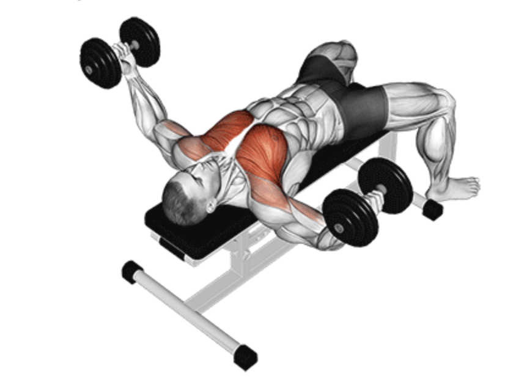
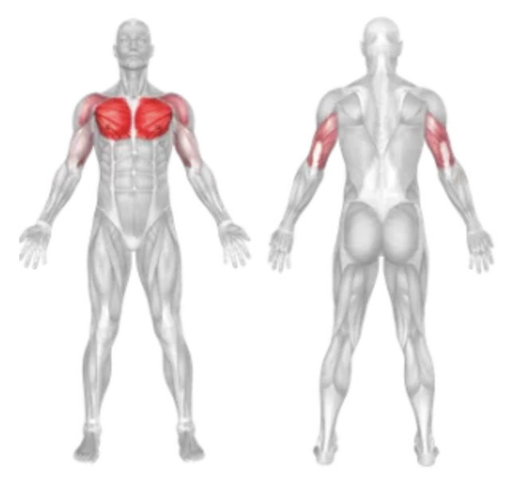
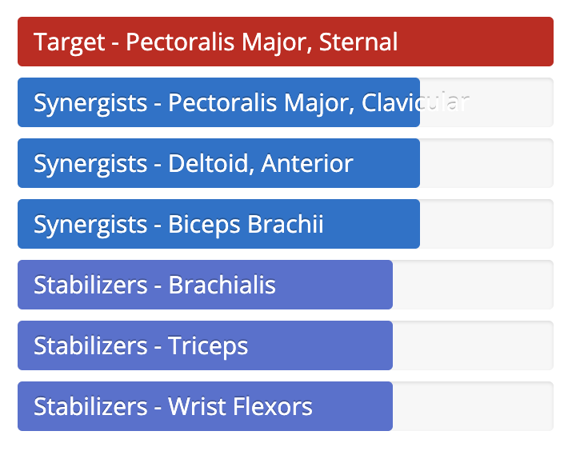

Flat Dumbbell Fly
Setup
Lie flat on a bench with a dumbbell in each hand, resting on your thighs.
Use your thighs to help lift the dumbbells as you lie back and extend your arms above your chest, palms facing each other.
Maintain a slight bend in your elbows throughout the movement to reduce joint stress.

Execution
Lower:
Slowly lower the dumbbells in a wide arc out to the sides until you feel a stretch in your chest.
Lift:
Squeeze your chest muscles and bring the dumbbells back up along the same arc to the starting position.
Keep your arms steady and avoid locking your elbows at the top.
Tips for Effectiveness
Controlled Movement:
Perform the motion slowly and under control to engage the chest fully.
Keep Elbows Slightly Bent:
Do not lock out or overly bend the arms; a soft bend ensures tension stays on the chest.
Breathing:
Inhale as you lower the weights and exhale as you bring them back up.
Benefits of Flat Dumbbell Fly
Chest Isolation:
Targets the pectoral muscles more directly than presses.
Improves Flexibility:
Enhances the range of motion and flexibility in the chest and shoulders.
Muscle Definition:
Helps in building shape and definition in the chest muscles.
Muscles Worked in Flat Dumbbell Fly


Do you want to change the language of this page?
English
Malayalam
Tamil
Hindi